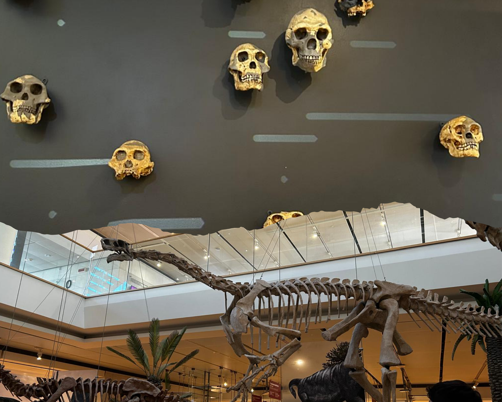
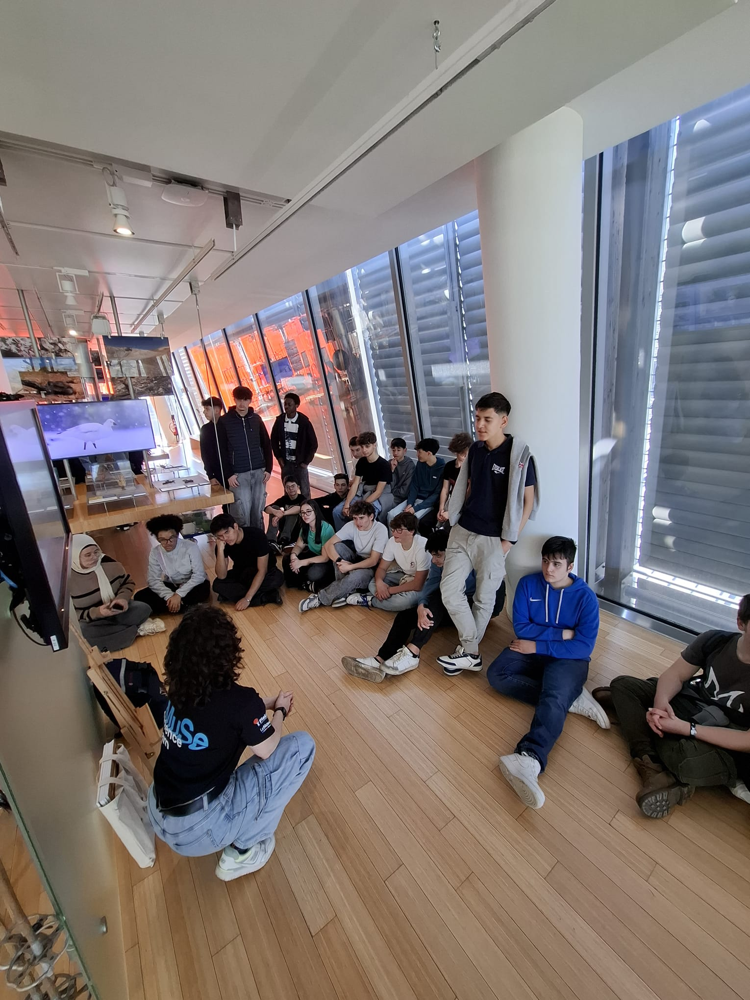

Museo MUSE
Il Muse è un grande museo della scienza, ed è stato progettato da Renzo Piano nel 2013. L'edificio ha un design moderno ed ha una forma particolare (a piramide) con grandi vetrate. Il luogo è circondato completamente da natura e da palazzi moderni che riprendono lo stile del museo. All' interno il museo è strutturato in 6 piani, che si restringono man mano che si sale. Il museo inizia dal basso ed attraversa i vari ambienti e periodi della vita della terra; sparsi per il museo inoltre sono presenti vari laboratori , serre e aree dedicate ad attività per bambini e di altri ambiti come la stampa 3D.

Evoluzione Umana e animale
Nella prima mattinata, a partire dal piano inferiore, il prof ci ha descritto l'evoluzione dell' uomo, facendoci confrontare l'evoluzione dei teschi e delle ossa degli umani nel corso del tempo; questa zona è stata molto suggestiva, poiché erano presenti scheletri di animali enormi, come quelli di una balenottera azzurra (vera) e animali tassidermizzati.

Serra Tropicale
Un'altra parte che è stata apprezzata è stata la serra del MUSE. Appena siamo entrati c'era un clima caldo e umido, completamente differente rispetto all' esterno, inoltre era presente una quantità di flora enorme. La serra aveva l'obbiettivo di rappresentare una foresta pluviale. Era presente inoltre uno stagno artificiale con delle anatre e rane, in giro e in mezzo alla flora era possibile vedere alcuni uccelli, in particolare i "Coturnix delegorguei".

Piano dedicato alla fisica
Dopo la serra abbiamo visitato il piano dedicato a dei semplici giochi per bambini trasformati in esperimenti fisici. Potevamo provare direttamente alcune attività per capire meglio le leggi della fisica. Ad esempio c'erano giochi con l'equilibrio, la forza, il movimento e le leve, che ci facevano sperimentare in modo semplice come funzionano alcuni principi scientifici.

Storia del paesaggio
Nel primo pomeriggio la guida ha deciso di approfondire l’evoluzione del paesaggio delle Dolomiti nel tempo. Grazie ai fossili osservati nel piano sotterraneo, abbiamo capito che milioni di anni fa al posto delle montagne c’era un ambiente marino, popolato anche da animali oggi estinti. Proseguendo il percorso, abbiamo visto il primo animale capace di modificare l’ambiente, il castoro, che costruendo dighe crea nuovi ecosistemi. Poi abbiamo ripercorso l’evoluzione dell’uomo: dall’Homo habilis all’Homo erectus, fino all’Homo sapiens moderno. Infine ci siamo concentrati sulle Dolomiti: un tempo erano considerate luoghi pericolosi, fin quando vennero studiate da Déodat de Dolomieu, da cui prendono il nome. Con il tempo, grazie anche al turismo, sono diventate sempre più frequentate. La guida ci ha mostrato anche alcuni quadri che raccontano l’evoluzione del turismo, dal periodo fascista fino a oggi.